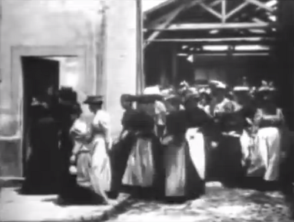
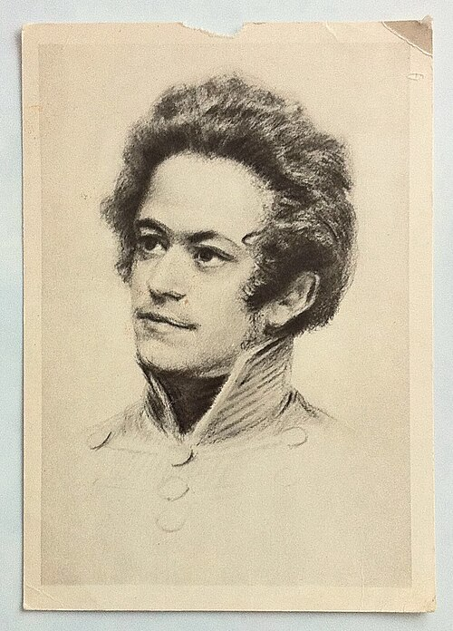
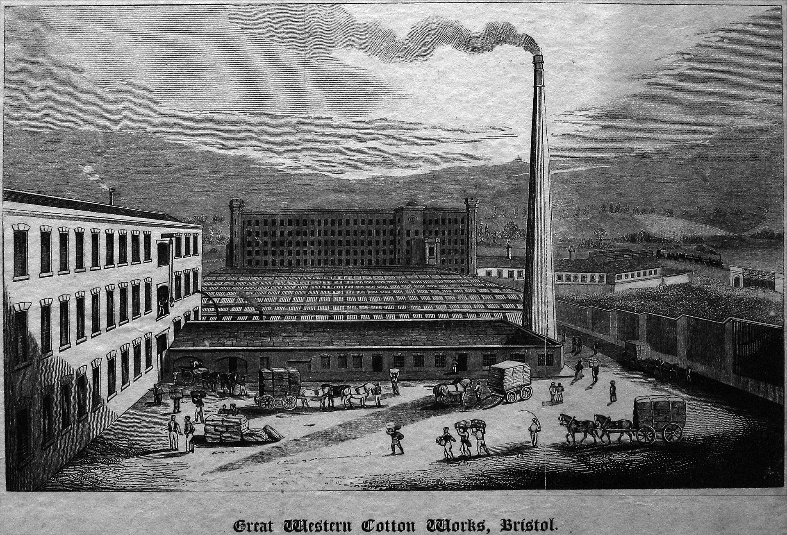
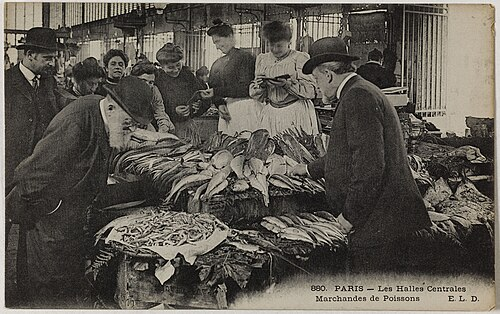

Ce que tu produis te domine — c'est l'aliénation
Plus l'ouvrier produit de richesse, plus son produit lui échappe et le domine comme une puissance étrangère. Son propre travail se retourne contre lui.
Rédigés à Paris en 1844 par un Marx de vingt-six ans, publiés à titre posthume seulement en 1932 — les Manuscrits forgent le concept d'aliénation : le travail qui devrait exprimer l'homme se retourne contre lui.




Lecture complète des trois manuscrits, section par section, directement dans la page.
Manuscrit par manuscrit — coche ce que tu as lu, reprends où tu t'étais arrêté.
Le texte n'avance pas comme une démonstration achevée, mais comme une série de déplacements. Voici le fil — non les concepts un à un, que dissèque le laboratoire, mais le ressort qui fait passer de l'un à l'autre, au long des trois cahiers.
Des instruments pour approcher les concepts non comme des définitions, mais comme des relations.
Vers 1845, une coupure épistémologique. Le jeune Marx des Manuscrits est encore idéologique — l'humanisme, l'aliénation, l'essence de l'homme hérités de Feuerbach et de Hegel. Le Marx scientifique du Capital rompt avec cette problématique : non plus un sujet-Homme, mais des rapports et des structures. Les Manuscrits seraient pré-marxistes.
Les Manuscrits sont la matrice de toute l'œuvre. L'aliénation reste le fil conducteur — le fétichisme de la marchandise en est la forme mûrie — et l'exigence d'émancipation la traverse de bout en bout. Leur exhumation tardive, en 1932, a nourri cette relecture : le Marx de la maturité approfondit, il ne renie pas.
La grandeur de la Phénoménologie : penser l'auto-engendrement de l'homme comme un processus, saisir le travail comme l'acte par lequel l'homme se produit, et faire de la négativité le moteur du mouvement. Marx ne jette pas Hegel — il le remet sur ses pieds.
Marx emploie les deux, et les traducteurs les rendent parfois par le même mot, « aliénation », ce qui brouille tout. Entäußerung (extériorisation, dessaisissement) est le mouvement, en soi neutre voire nécessaire, par lequel on se porte au-dehors — le terme a même un sens juridique : céder un bien. Entfremdung est le résultat hostile : devenir étranger. On peut s'extérioriser sans s'aliéner ; c'est l'écart entre les deux que la propriété privée vient combler.
Non plus expliquer le texte — le laboratoire s'en charge — mais ouvrir : où va la pensée une fois les cahiers refermés. Trois sorties, de la plus proche à la plus lointaine.
Les cahiers restent un chantier ; le fil se poursuit ailleurs. Les Thèses sur Feuerbach (1845) font de la praxis le critère, L'Idéologie allemande (1845-46) ancre la critique dans l'histoire matérielle, et la critique de l'économie politique aboutit, vingt ans plus tard, au Capital. L'aliénation n'y disparaît pas : elle s'y transforme.
Ce que les Manuscrits nomment aliénation, Le Capital le repense sous le nom de fétichisme de la marchandise : le rapport social entre les hommes y prend la figure d'un rapport entre les choses. Le même problème, mûri par vingt ans de critique économique.
Ouvrir Le Capital →Exhumé en 1932, le concept a essaimé bien au-delà : la réification chez Lukács, la critique du travail et de la culture à l'École de Francfort, jusqu'à l'usage courant du mot pour dire le travail qui dépossède. Les Manuscrits sont devenus une boîte à outils du XXe siècle.
Le texte a deux âges : celui de son écriture, en 1844, et celui de sa découverte, près d'un siècle plus tard — quand son exhumation rouvre la lecture de tout Marx.
Conférences, podcasts et articles en libre accès autour des Manuscrits — pour approfondir avant ou après la lecture.